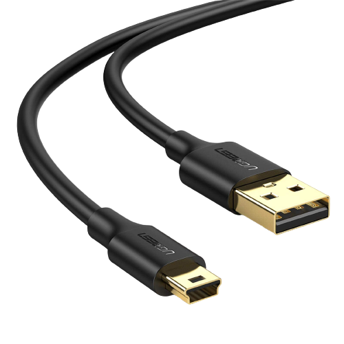
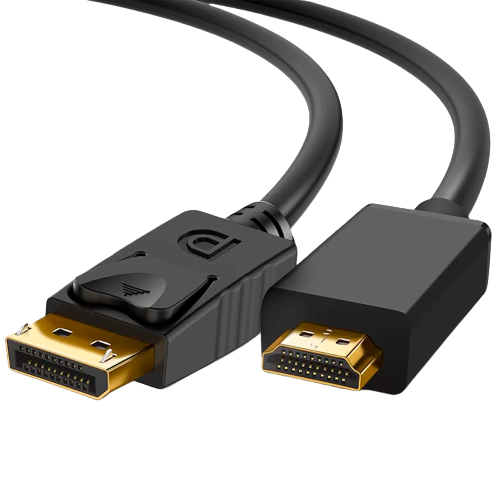
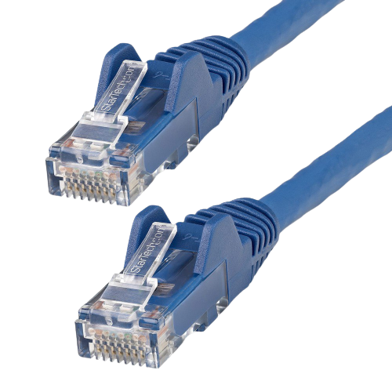
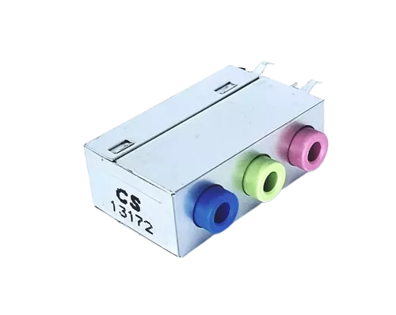
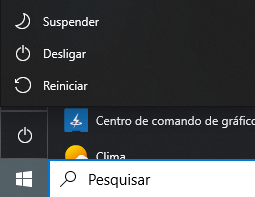

Introdução
Seja Bem-vindo ao Curso TOInformatizado que foi desenvolvido para ajudar a comunidade Estudantil de Colinas do Tocantins no ensino da informática. Através dessa capacitação poderemos oferecer um acervo para democratizar o acesso a informação e informática para os Alunos do Ensino médio do Terceiro ano das Escolas Publica de Colinas do Tocantins.
Nesse Curso você aprendera a identificar os componentes principais do computador, todas as informações e ferramentas necessárias para estar atualizado para o mundo acadêmico e profissional. Conforme o tempo passa está cada vez mais claro que a informática se torna algo essencial na vida das pessoas como no trabalho, escola até como nos comunicamos.
E nesse curso não haverá requisito mínimo para estar nele , iremos aprender tudo do zero não precisando de nenhum conhecimento aprofundado para estar estudando.
Ao percorrer do curso haverá exercícios de fixação que servira apenas como ferramenta de estudo para aquecer os conhecimentos adquirido ao percorrer do curso, apenas questões de marcar de A, B, C e D ao termino de cada Aula sobre o assunto estudado.
Sua capacitação e essencial para nossa sociedade que através do tempo se conecta cada vez mais com o mundo digital. Desejamos um ótimo curso e através dele você possa partir dos conhecimentos básicos da informática para trilhar um caminho de novas possibilidades na sua vida.
O Computador e o Mobile

Computador do tipo torre
Nesse tipo de Desktop o monitor e o gabinete são separados. Dentro do gabinete comporta as peças principais do computador como: Placa mãe, Processador, Memoria ram, Hd e fonte.

Computador do tipo All in One (tudo em um)
Esse tipo de desktop leva a pensar que existe apenas o monitor, mas atrás do monitor dele possui todos os componentes de um gabinete comum, que torna ele um modelo de desktop muito prático.
Notebooks
Os notebooks são computadores portateis e leves que podem ser transportados para qualquer lugar com facilidade, sendo muito utilizado para estudo e trabalho. Nele possui a tela, e teclado já os componententes como memoria ram, processador, hd todos estão acoplados em baixo do teclado.
Smartphone e Tablet
Smartphone são computadores de Bolso e o Tablet e um computador portatil, possuindo uma tela touch(tela sensivel ao toque) atrás da tela ele possui memoria ram,processador e memoria interna.
Componentes Principais
O computadores tem em sua constituição 2 componentes principais a parte fisica e logistica. A parte fisica e chamada de Hardware nela está o Mouse,Teclado, monitor, e todas as peças que estão dentro do gabinete. Já a parte Logica e chamado de Software que e composta pelo sistema operacional e aplicativos.
Hardware
Processador
O processador e o cerebro do computador responsavel por transformar dados em informações, como carregar pagina, abrir programas e arquivos, A velocidade na qual o sistema executa os programas, é, em parte, resposabilidade do processador. Sua capacidade é medida em Hertz (Hz) e a quantidade de Nucleos para medir a qualidade.
Principais Marcas AMD e Intel.
Placa-Mãe
Placa-mãe e a central de comunicação nela está conectada os componentes do computador, sua funcão e controlar todos os componentes de forma que se interliguem para o funcionamento do computador.
Principais Marcas ASUS, Gigabyte, MSI e ASRock.

Memoria Ram
Memoria ram e a memoria de curto brazo do computador, ela armazena temporariamente os arquivos dos programas para que possam ser utilizados enquanto ele está ligado, depois que desliga os arquivos guardados são perdidos. Quanto mais memoria ram sera possivel que o computador seja rapido.
Principais Marcas Samsung, Kingston e a Corsair.

HD | SSD | SSD M.2
Nestes Dispositivos são guardados os arquivos que são utilizado pelo usuario, como os arquivos para iniciar o sistema operacional tambem são armazendados filme, jogos, fotos, videos e todos os programas instalados. O HD e a versão mais antiga onde e o mais lento para ler os arquivos e realocar arquivos já que ele utiliza um disco como leitura igual os Disco de viniu de antigamente, o SSD e o mais recente ele guarda e o mais rapido que o HD ele e mais proximo a tecnologia do Pen-drive e o SSD M.2 e a versão mais rapida do SSD sendo até 3x mais rapido que o convencional já que ele e ligado direto na placa-mãe.
Principais Marcas Samsung, Kingston, Crucial, Somnambulist e a BestBattery.
Fonte
Basicamente a fonte de alimentação converte a energia eletrica para regular a tensão assim fazendo os componentes internos do computador possam funcionar em segurança.Já o medidor da fonte e Watts.
Principais Marcas Corsair, Redragon, GameMax, Cooler Master, EVGA e XPG (Diferente das outras peças do computador a Marca da fonte e Super Importante).
Gabinete
E o componente onde fica fixado quase todos os componentes do computador, onde está o botão de ligar, entradas para usb e fone de ouvido. E todos os outros componentes citados a cima esto dentro do Gabinete
Principais Marcas AeroCool, Bluecase, C3Tech, Cooler Master, Corsair e HYPERPC.
Fans
São componentes para resfriar o computador são pequenos ventiladores para tirar o ar quente do computador ou trazer o ar frio para dentro do gabinete.
Principais Marcas AeroCool, Bluecase, Cooler Master e Corsair.

Placa de Video
É uma placa que gera uma saida de alimentação de imagens para o computador, ele e importante para renderizar gráficos tanto 2D quanto 3D. Muito usado para Jogos e programas de modelagem 3D muito usado nos cursos de enegenharia. Existe 2 tipos OnBoard que estão ligadas ao processador e OffBoard que são placas proprias que possuem processador proprio e memoria ram.
Principais Marcas NVIDIA e AMD.
Componentes Principal de Notebook, Smartphone e Tablet
Esses aparelhos eletronicos possuem os mesmos componentes sitados a cima, menos placa de video OffBoard e Fonte, já que e usado bateria no lugar.
Principais perifericos
Os Perifericos são componentes externos ao computador, já que por conta deles podemos interagir com o computador enviando e recendo informações como mouse, teclado, monitor, Webcam, caixa de som, fone de ouvido e etç.
Mouse
- 1 Botão Esquerdo: Esse botão é usado para selecionar,marcar,arrastar, abrir arquivo e aplicativos.
- 2 Botão Direito: Já esse botão é usado para acessar propriedades de arquivos, ver opções para editar o arquivo, submenu para copiar,colar e recortar.
- 3 Scroll: Tem a função de movimentar para baixo ou cima páginas web ou aplicativos.
Teclado
- Teclado alfanumérico: São os botões de letras e números;
- Teclado numérico: Sãos os botões como uma calculadora;
- Teclas de controle: são as teclas de F1, home, alt, Delete, Page Up e entre outras, usadas isoladas e em conjunto com outras para executar alguma função específica.
- Teclas de direção: Essas teclas tem setas indicando a direção que querem mover o cursor.
- Teclas de função: realiza funções específicas, que muda de acordo com o programa ou sistema operacional utilizado. elas tambem podem ser ativadas junto com outra tecla.
- Shift e utilizado em conjunto com outras teclas ela ativa as letras desenhadas em cima da tecla.
- Tab e usado na edição de texto. Seve como marcador de parágrafos. ela e usada para passar para baixo em formularios e em sites web.
- Caps Lock e usado para ativar e desativar as letras maiúsculas do teclado.
- Print Screen e utilizada para capturar a imagem da tela do computador.
- Ctrl e a tecla Control e utilizada em conjunto com outra tecla.
- Alt é uma tecla de controle de alternativo. Ela e combinada com outra para executar funções.
- Esc e usado para entrar em manu, programa ou abandonar uma tela.
- Delete e usada para apagar um caractere a direita do cursos.
Monitores
O monitor é um periférico de saida muito importante, ele emite as imagens geradas pela placa de video. Assim oque você faz no computador, a imagem e gerada e mostrada para o usuario.
| Periferico | Tipo de Conexão | Imagem |
| Mouse,Teclado,Webcam,Caixa de Som e Pendrive | USB |  |
| Monitor e Projetor | HDMI |  |
| Placa de Rede, Roteador e Impressora | RJ-45 |  |
| Microfone, Fone de Ouvido e Caixa de Som | ENTRADA E SAÍDA P2 |  |
Como Ligar o Computador
Ligar o computador e bem simples. O computador pode estar ligado de diversas formas, pela tomada, ou atravez de Estabilizador ou filtro de linha.
Formas de Desligar
Mesmo o computador tendo o botão de Desligar e recomendado que desligue o computador dentro do sistema operacional para evitar erros que comprometam o sistema para futuras falhas.
Medida de Armazenamento
No mundo na Tecnologia assim como na vida real possui seus próprio sistema de medida.
| 1024B(Byte) | 1KB(KByte) |
| 1024KB(Kbyte) | 1MB(MegaByte) |
| 1024MB(MegaByte) | 1GB(Giga Byte) |
| 1024GB(Giga Byte) | 1TB(Tera Byte) |
Como Comprar um Computador e SmartPhone
Para comprar um computador na loja, geralmente e recomendado computadores não muito bons, mas geralmente a descrição e pouco explicada. Com isso vamos explicar de uma melhor forma exemplos para analisá na hora da compra.
Agora que explicamos os principais componentes que compõem o computador, Respoda qual dos dois Notebook abaixo e a melhor opção.
Conheça o Windows e Como Acessar a Internet
Conheça a interface do Windows

Barra de Tarefas
- 1 Iniciar do Windows
- 2 Aplicativos Ativos Oculto
- 3 Status da Internet e Regular Som